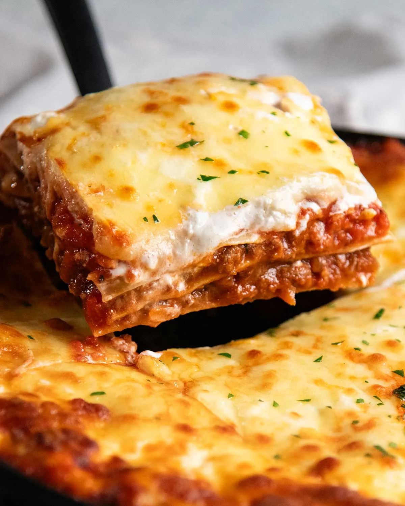

Description
A hearty homemade lasagna — layers of pasta, rich sauce, and melted cheese. Simply delicious!
Nutritional Information
| Nutrient | Per Serving | Daily Value |
|---|---|---|
| Calories | 420 kcal | 21% |
| Protein | 24g | 48% |
Ingredients
- Lasagna noodles — 12 sheets
- Ground beef — 500g
- Tomato sauce — 700ml
- Onion — 1 medium, chopped
- Garlic — 3 cloves, minced
- Mozzarella cheese — 2 cups, shredded
- Parmesan cheese — ½ cup
- Olive oil, salt, pepper — to taste
Step-by-Step Instructions
- Preheat your oven to 375°F (190°C).
- Cook the lasagna noodles in salted boiling water until al dente. Drain and set aside.
- In a large pan, heat olive oil over medium heat. Sauté onions and garlic until fragrant.
- Add ground beef and cook until browned. Pour in tomato sauce, season with salt and pepper. Simmer for 15 minutes.
- Layer in a baking dish: sauce → noodles → cheese → repeat. Finish with cheese on top.
- Cover with foil and bake for 25 minutes. Remove foil and bake another 15 minutes until golden and bubbly.
- Let rest for 10 minutes before slicing. Serve hot and enjoy!